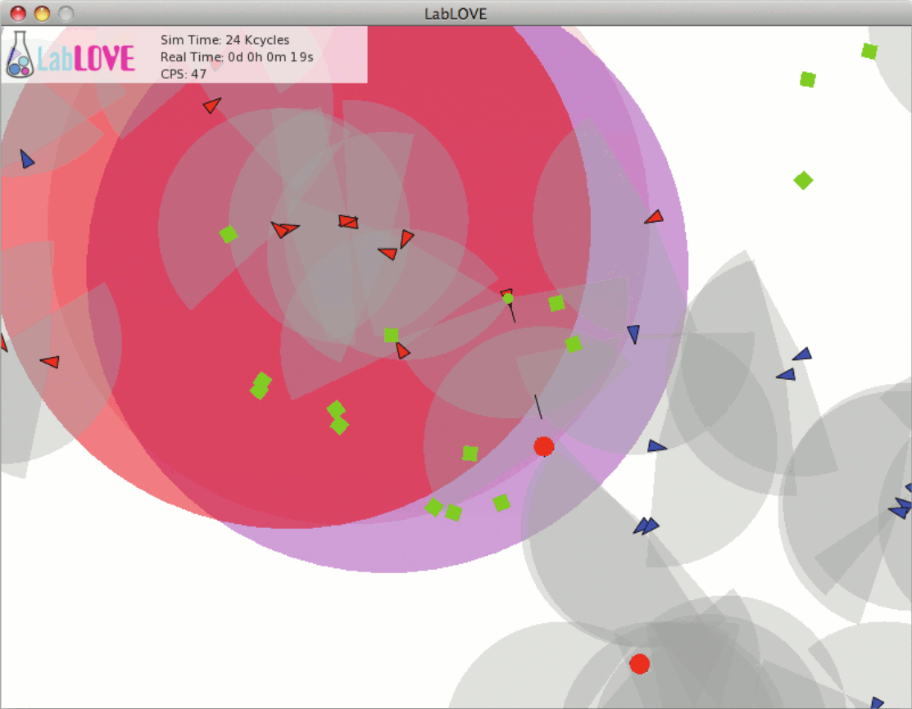

Screenshot of the LabLOVE visualization window using the Sim2D environment. Two species of agents can be seen, red and blue, as well as food items in green. The grey areas in front of agents represent their vision range. Large colored circles represent sounds being propagated in the environment. A red agent can be seen shooting at another agent near the center of the screen.
